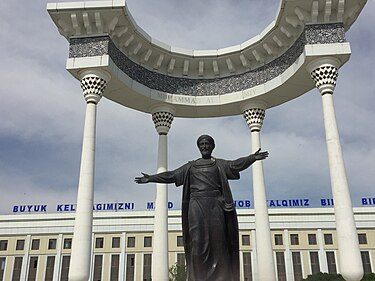
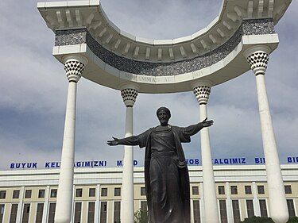
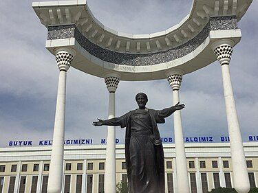
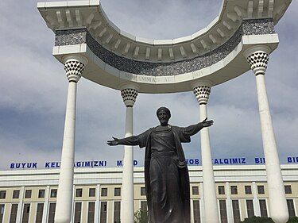
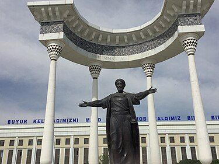

Tribute to Al-Khwarizmi: The Father of Algebra

In the realm of mathematics and science, few names hold as much significance as Al-Khwarizmi. Often referred to as the "Father of Algebra," his contributions to the field not only revolutionized mathematics but also paved the way for advancements in various branches of science. Let's delve into the life and achievements of this remarkable scholar.
Al-Khwarizmi, whose full name was Abu Abdullah Muhammad ibn Musa al-Khwarizmi, was born in the Persian city of Khwarizm (modern-day Khiva, Uzbekistan) around 780 CE. Little is known about his early life, but it is believed that he received his education in Baghdad, which was a center of learning and culture during the Islamic Golden Age.
Al-Khwarizmi's most significant contribution lies in his work on algebra. His book, Kitab al-Mukhtasar fi Hisab al-Jabr wal-Muqabala (The Compendious Book on Calculation by Completion and Balancing), provided systematic solutions to linear and quadratic equations. The term "algebra" itself is derived from the Arabic word "al-jabr," which is the title of one of the chapters in his book.
The term "algorithm" also has its roots in Al-Khwarizmi's name. His work extensively dealt with mathematical algorithms for solving equations. The Latinized version of his name, "Algoritmi," became synonymous with the systematic process of performing mathematical operations.
Al-Khwarizmi played a crucial role in introducing the decimal system to the Western world. He popularized the Hindu-Arabic numeral system, which is the basis of the modern numeral system used worldwide.
In addition to his work in algebra, Al-Khwarizmi made significant contributions to trigonometry and astronomy. His astronomical tables were used for navigation and timekeeping.
Al-Khwarizmi's works were instrumental in preserving and transmitting mathematical knowledge from ancient civilizations to the Renaissance era. His ideas not only influenced scholars in the Islamic world but also had a profound impact on European mathematicians and scientists during the Middle Ages
Al-Khwarizmi's brilliance as a mathematician, astronomer, and scholar has left an indelible mark on human history. His pioneering work laid the foundation for modern mathematics and algorithmic thinking, shaping the way we understand and solve complex problems. As we continue to explore the mysteries of the universe, let us remember and honor the legacy of this extraordinary intellect, Al-Khwarizmi, the Father of Algebra.